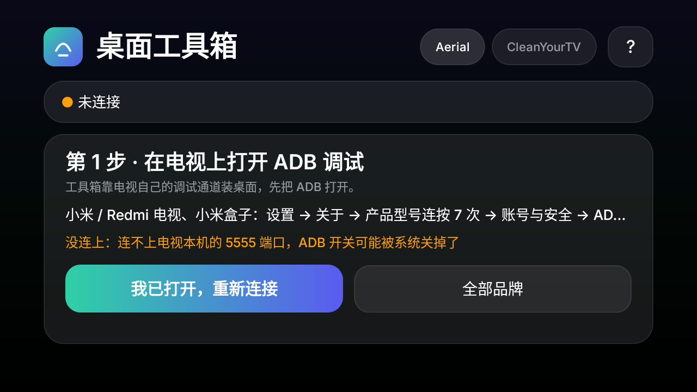
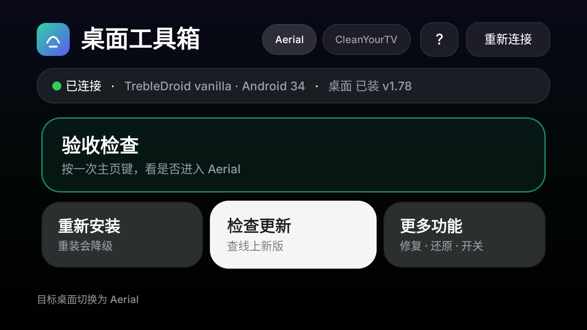

桌面工具箱把繁琐的 ADB 命令固化进 APK：安装、授权、接管主页键、屏保、验收——全自动完成。支持 Aerial 与 CleanYourTV 两款高质量开源桌面。
Install open-source TV launchers (Aerial / CleanYourTV) on Android TV boxes and take over the HOME button — no PC, no root. TV app + phone app.
手机上填电视 IP 就能连，全程不需要电脑、不需要 USB 线
唯一的前提是电视上把 ADB 打开——这一步只要遥控器。之后装电视端自己装，或装手机端填 IP 远程装，都不需要电脑。
All you need is ADB enabled on the TV (remote only). After that, install on the TV or straight from your phone by typing its IP.
进「设置 → 关于」，连按版本号 7 次开开发者选项，再打开 USB 调试 / ADB 调试。各品牌入口见下表。
只装一个也行。电视端装在盒子上自己装；手机端装在手机上，填电视 IP 就能连。
选 Aerial 或 CleanYourTV → 点最上面那张大卡安装 → 装完它就变成「验收检查」，按一次主页键就知道接管成功没有。
打开后设备自己就在 5555 端口监听，手机端直接连即可。隐藏入口会随固件版本变动，以下路径以实机为准。
Once enabled, adbd listens on port 5555 — your phone can connect directly. Hidden entries vary by firmware.
Android 的 adbd 是设备内部常驻的调试服务。电视一打开 ADB，它自己就在 5555 上监听——手机端只是扮演"另一台 adb 客户端"，所以跳过电脑直连完全可行。
不需要 USB 线，不需要 adb tcpip 5555，也不需要电脑上装任何工具。只要手机和电视在同一个 Wi-Fi / 路由器下，在手机上输入电视 IP 即可。
官方安装说明是一长串 adb 命令，任何一步顺序错了，装得上却主页键回不去。这个工具把整套流程固化好，还专门解决了一批真实痛点。
The official guide is a wall of adb commands. One wrong step and HOME won't return. We bake the whole flow in — and fix real-world edge cases.
界面跟着状态走：没连上就只教第一步开 ADB；连上没装就只给一张「安装桌面」大卡；装好了大卡自己变成「验收检查」。一屏最多 4 个入口，其余收进「更多功能」。The first screen adapts: guide → install → verify. At most 4 entry points, the rest live in "More".
电视连不上 GitHub？官方安装包直接内置在 APK 里，安装全程不联网。Launcher APKs are bundled inside the app — installs work fully offline.
一个整宽大按钮负责「装」，次要操作一行三个；安装选项和运行日志默认折叠成一行摘要，日志里出现「失败 / 异常」才自动展开。One big install button; options and logs collapse to a one-line summary and auto-expand only on errors.
进连接页自动扫一次局域网，扫到点一下就直连；端口收进「高级」，正常根本不用管。Auto-scan on open, tap to connect; the port hides under "Advanced".
装完主页键回原桌面？「更多功能 → 修复主页键」只重跑授权；「验收检查」按一次主页键确认进的是新桌面。HOME still returns to stock? Repair re-runs grants only; Verify presses HOME and checks the foreground window.
TCL / 雷鸟拒绝 ADB 安装 → 走 guard 通道；小米待机后 ADB 被关 → 「ADB 常开」自动开回。TCL/FFALCON block ADB installs → guard channel; Xiaomi kills ADB on sleep → "Keep ADB" re-enables it.
两个应用共用同一套核心逻辑，所以手机上远程装出来的结果，和把工具箱装到电视上自己装，完全一样。
Both apps share the same core module, so remote installs from the phone match on-device installs exactly.
内置 Aerial v1.52（tvOS 航拍风、屏保）· CleanYourTV v3.0.0（Apple TV dock 风，上游只发源码，由本仓库代构建并降到 Android 5.1）
电视端首屏只有三件事：告诉你现在什么状态、下一步点哪里、别的都收起来。


装在电视 / 盒子上跑，720p 到 4K 都按遥控器单屏布局验证过：没有长列表，聚焦到哪滚到哪，不会跑到屏幕外面去。
两个端都是独立 APK，按设备选择。Android 5.0（API 21）及以上可用。
所有版本与更新日志见 GitHub Releases · 源码以 MIT 协议开源